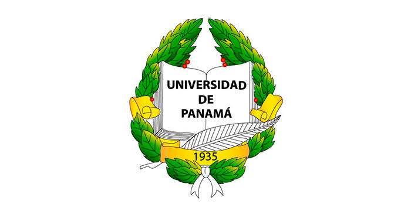

Mgtr. Luis Marín
Universidad de Panamá
Astrofísica / Física
Participación:
Conferencia Magistral
Profesor e investigador en la Escuela de Física. Apasionado por la divulgación científica y el estudio de los fenómenos astronómicos.